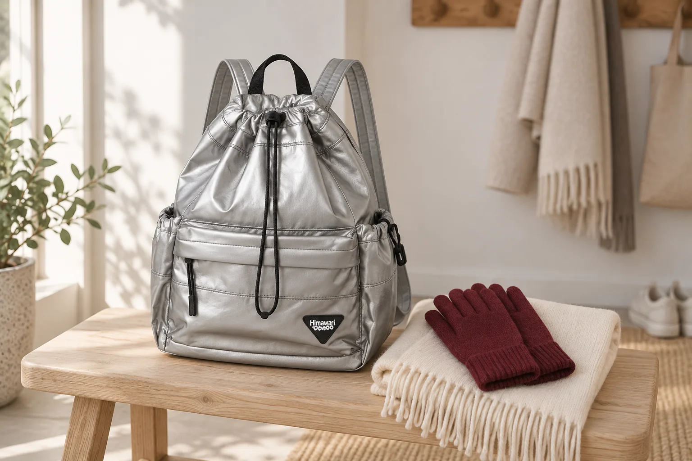

장갑을 벗으면 한 쌍으로 모아두세요

장갑을 끼고 나갔다가 휴대전화를 쓰거나 계산할 때 잠깐 벗습니다. 그때 한 짝은 코트 주머니에 넣고, 다른 한 짝은 손에 들고 있다가 가방에 넣기도 합니다. 다시 밖으로 나와 장갑을 찾으면 두 군데를 뒤지게 됩니다. 집에서 짝을 맞추는 것만큼, 밖에서 벗는 순간 두 짝을 모아두는 습관도 도움이 됩니다.
벗은 자리에서 두 짝을 같이
장갑을 벗으면 손에 든 한 짝을 먼저 내려놓기보다 다른 한 짝까지 모읍니다. 손목 부분을 나란히 맞추어 쥐면 두 개를 함께 들고 있는지 눈으로 보기 쉽습니다. 계산대나 카페 테이블에 잠깐 올렸다면 자리를 떠나기 전에 둘 다 가져왔는지 봅니다. 새로 장갑을 꺼낸 날에는 양손에 하나씩 끼어보고 같은 한 쌍인지 알아두세요.
다시 찾을 곳은 하나로
마른 장갑은 두 짝을 같은 주머니나 작은 보관 주머니에 넣습니다. 매번 넣는 자리가 달라지면 다시 낄 때 어디부터 찾아야 할지 망설여집니다. 자신이 쓰는 가방에서 꺼내기 쉬운 곳을 정하되, 장갑의 두께와 실제 공간에 맞게 선택하세요. 사진 속 가방에 장갑이 들어간다는 뜻은 아니며, 외부 크기만으로 내부 수납을 판단할 수는 없습니다.
젖은 장갑은 돌아와서 말리기
눈이나 비로 장갑이 젖었다면 다른 소지품과 함께 넣어두지 않습니다. 잠시 따로 운반하고, 집에 오면 장갑의 세탁·건조 안내에 맞춰 정리해주세요. 마른 장갑을 보관하는 자리와 젖은 장갑을 임시로 두는 자리는 구분하는 편이 편합니다. 돌아와 두 짝을 꺼내놓을 때도 어느 한쪽이 코트 주머니에 남아 있지 않은지 살펴봅니다.
다음 외출 전에 한 쌍 꺼내보기
문을 나서기 전에 장갑 두 짝을 한 번에 꺼내봅니다. 얇은 장갑과 두꺼운 장갑을 번갈아 쓴다면 여러 짝을 한곳에 섞기보다 오늘 쓸 한 쌍만 챙겨도 좋습니다. 사진은 No.0514의 실버 미니 옵션으로 연출했습니다. 같은 모델 이름이라도 크기 옵션이 다를 수 있으니 제품을 고를 때는 모델명과 미니 표기를 함께 봐주세요.
참고·안내
- Himawari No.0514 제품 정보
- No.0514 실버 미니(0514Mini·0514S)의 실제 원본과 제조사 카탈로그 외부 치수 27 × 36 × 14cm(가로 × 세로 × 폭)를 참고한 AI 연출 사진입니다. 장갑과 목도리는 가방 밖의 소품이며 실제 고객 사용이나 내부 수납을 실측한 사진은 아닙니다. 측정 방식에 따라 치수 차이가 있을 수 있습니다.
자주 묻는 질문
장갑은 한 짝씩 다른 주머니에 넣어도 되나요?
벗는 자리에서 두 짝을 모아 같은 곳에 두면 다시 낄 때 찾을 곳을 줄일 수 있습니다. 실제 주머니 크기와 장갑 두께에 맞춰 자리를 정해주세요.
No.0514의 모든 옵션이 27 × 36 × 14cm인가요?
이 글의 사진은 실버 미니(0514Mini·0514S) 원본과 해당 옵션의 제조사 치수를 참고했습니다. 다른 크기 옵션까지 같은 치수로 안내하지 않습니다.